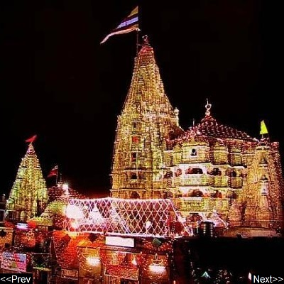

Dwarkadhish Temple
The Dwarkadhish temple, also known as the Jagat Mandir and occasionally spelled "Dwarakadheesh", is a Hindu temple dedicated to Lord Krishna, who is worshipped here by the name Dwarkadhish, or 'King of Dwarka'